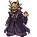
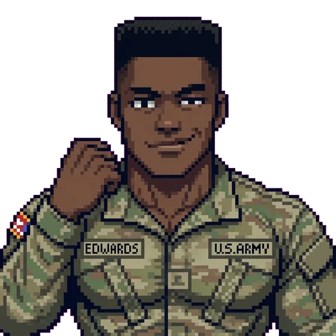
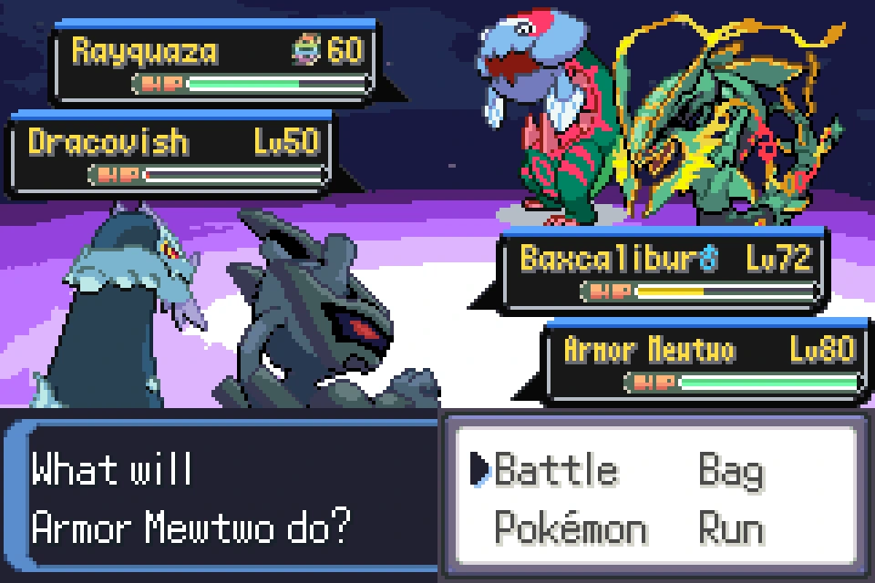
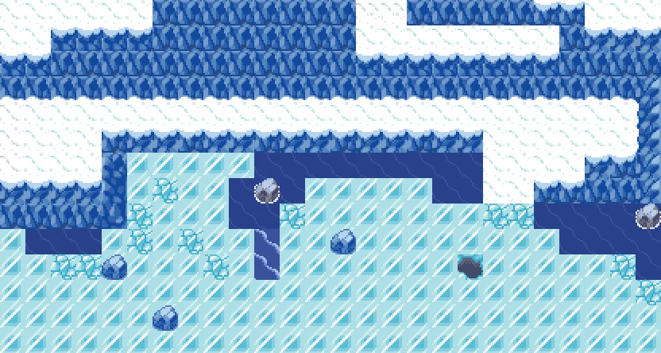
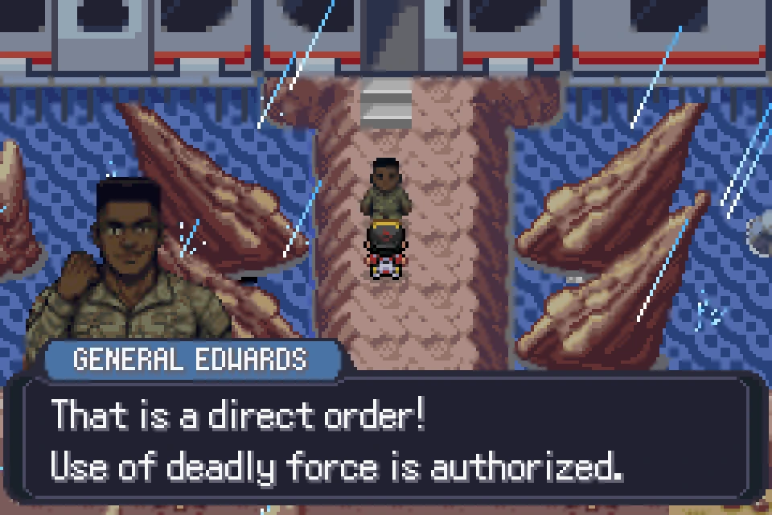
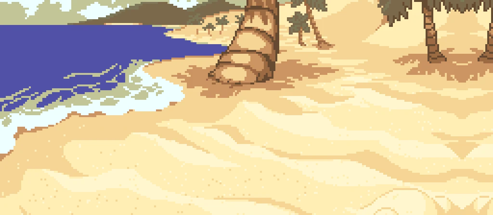
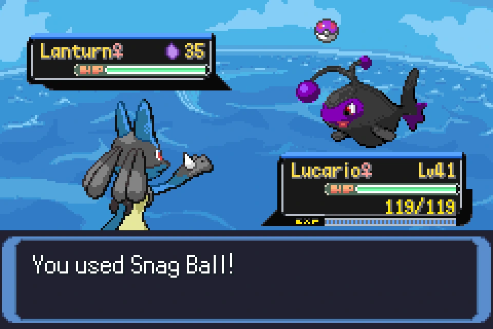
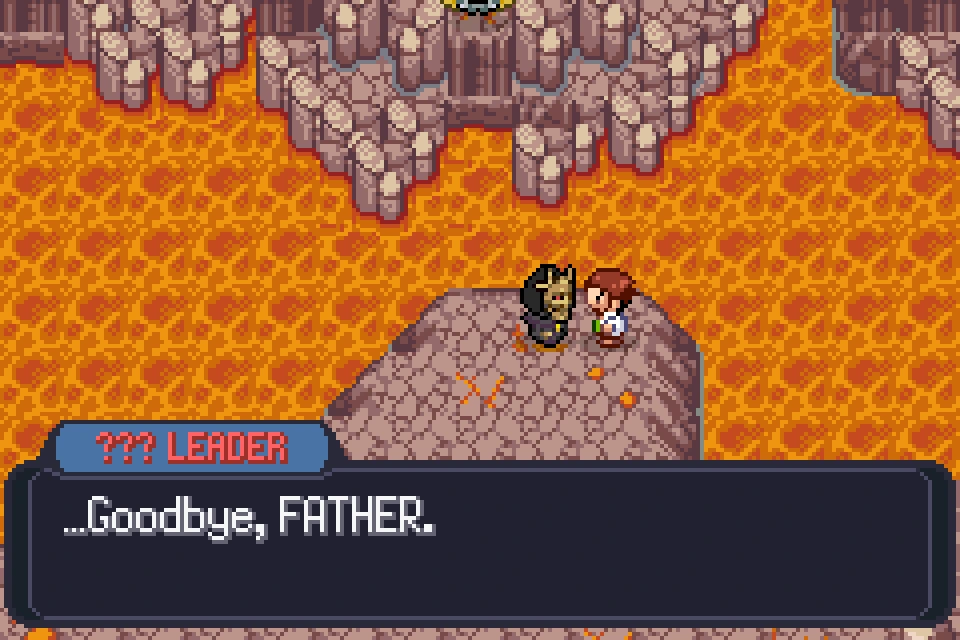

Prof. Clarkson
Regional researcher
Hands you your first partner, then follows you around the region asking questions he already knows the answer to.
A handmade pixel-art adventure for the Game Boy Advance. Cross the forests, lake towns and shrine paths beneath Mt. Fuji, raise a team of creatures, and find out what the mountain has been waiting for.

Hands you your first partner, then follows you around the region asking questions he already knows the answer to.

Army specialist and jumpmaster. Wants the same thing you do and is not remotely subtle about it.
Runs the outfit digging under the mountain. Believes he's the reasonable one, which is the problem.
Knows every wire under the city and who paid for it. Trades information for favours you'd rather not owe.
Holds the lake route and won't let you pass until your team can handle deep water.
Runs the storage system and the healing machines. Complains about both, fixes neither.
Third badge, and the first fight that actually asks you to think about turn order.
Towns, a lake, a shrine road and a mountain you can actually climb — sixty-four maps drawn tile by tile.
Ten generations of creatures in one region, plus over fifty custom sprite designs drawn for this game alone.
Reworked type balance, faster animations, and a difficulty curve tuned by people who beat the original blindfolded.
Fast travel, a searchable bag, run by default, reusable balls, and a reworked battle system. The tedium is gone; the game isn't.
Patch your own copy in this tab and press play — the game runs in your browser, no emulator to install. Keep the patched file too, if you'd rather play it on something else.






Free, no account, no launcher. Grab the patch from the latest release and apply it to your own legally obtained base ROM.
Pick your own copy of Pokémon Emerald (U) — the 16 MB .gba or a .zip of it, either works — and this page will build your patched ROM. Your file is read and written locally by your browser — it is never uploaded, and there is no server here to upload it to.
Loading the patcher…
Keyboard on desktop: arrows to move, Z and X for A and B, Enter for Start, Shift for Select. On a phone the on-screen pad appears automatically, and ⛶ Fullscreen gives the game the whole screen. The on-screen Fast button toggles fast-forward on and off — no need to hold it. Saves live in this browser — export the save from the emulator's menu if you want to keep it.
We distribute a patch, never a game. You need your own legally obtained copy of the base ROM — we don't provide one and can't help you find one. The ROM is never uploaded; the emulator itself is loaded from the EmulatorJS CDN when you press play.
Name your own character at New Game. Custom battle backdrops across the whole region, day-to-night sea battles, and Shadow sprites that finally sit right. Post-game FLY reaches every area. Save-compatible with v1.0.0 — keep your run.
First public release. The full three-act campaign, an original region, and the Shadow capture-and-purification system.
Every release is listed on the releases page.
Yes, and it stays that way. There is no paid tier, no cosmetics, and no donation nag inside the game.
You need your own legally obtained dump of Pokémon Emerald (U) to apply the patch to. We distribute a patch, not a game — we don't provide the base ROM and can't help you find one.
Use the patcher further up this page: choose your base ROM, press Apply, save the result. It all happens inside your browser — the ROM is never uploaded anywhere, and this site has no server that could receive it. If you'd rather patch offline, the file is a standard BPS and works with Flips or any other patcher.
Yes. Patch your ROM on this page, then press Play in browser — the emulator loads on demand and boots the ROM you just built, with keyboard controls on desktop and an on-screen pad on phones. Nothing is uploaded; the game runs on your own machine. Saves are kept in your browser, so export them from the emulator's menu if you want to move them to a real emulator or a flash cart.
The patch stores a checksum of the exact base ROM it was built against, and the patcher compares yours to it. A mismatch almost always means a different region or revision, or a dump with a header still attached. You want the plain 16 MB Pokémon Emerald (U) file, code BPEE. A .zip of that file also works — the patcher unzips it before checking.
Yes — any modern GBA emulator works. Delta on iOS and mGBA on Android are the two we test against each release.
Yes — v1.1.0 is fully save-compatible with v1.0.0. Patch a fresh ROM with the new version and keep using your existing save. Whenever a future version breaks save compatibility, the release notes will say so at the top.
Open an issue on GitHub, or email joe@flatfootlabs.com with your version number and the save file if you have it.
Something is in prototype. It's smaller, and it's not set near the mountain.